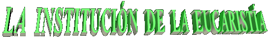
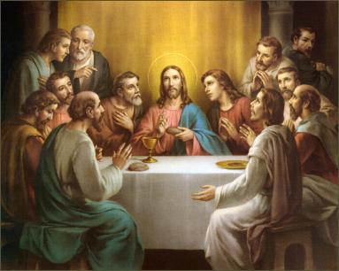
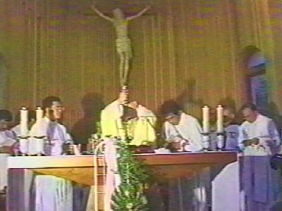

Cuando llegó el momento de partir a la eternidad, la inmensidad de la bondad Divina nos ofreció el presente más grande y mejor de todos: instituyó el Sagrado Sacramento de la Eucaristía, Presencia Real del SEÑOR, con su Cuerpo, Sangre, Alma y Divinidad en el Hostia y en el Vino Consagrados. JESÚS es el verdadero pan descendido del Cielo, comida para el alma, fuerza y inspiración para la humanidad en la caminata existencial, vínculo poderoso que une y congrega todos los fieles al rededor de un único Altar hasta la consumación de los siglos.
San Mateo registró aquello inolvidable momento escribiendo las palabras que JESÚS habló:
"Y comiendo ellos, tomó JESÚS el pan, y bendijo, y lo partió, y dio á sus discípulos, y dijo: Tomad, comed. Esto es MÍ Cuerpo. Y tomando el vaso, y hechas gracias, les dio, diciendo: Bebed de él todos; Porque esto es MÍ Sangre del nuevo pacto, la cual es derramada por muchos para remisión de los pecados." (Mateo 26,26-28)
San Marcos registró así:
"Mientras ellos Comían, JESÚS Tomó pan y lo bendijo; lo Partió, les dio y dijo: Tomad; esto es MÍ Cuerpo. Tomando la copa, y habiendo dado gracias, les dio; y bebieron todos de ella. Y ÉL les dijo: Esto es MÍ Sangre del pacto, la cual es derramada a favor de muchos". (Marcos 14,22-24)
San Lucas anotó las siguientes palabras:
"Entonces Tomó pan, y habiendo dado gracias, lo Partió y les dio diciendo: --Esto es MÍ Cuerpo que por vosotros es dado. Haced esto en memoria de MÍ.
Asimismo, después de haber cenado, Tomó también la copa y dijo: Esta copa es el nuevo pacto en MÍ Sangre, que por vosotros se derrama". (Lucas 22,19-20)
San Pablo describe así:
"Porque yo Recibí del SEÑOR la enseñanza que también os he transmitido: que el SEÑOR JESÚS, la noche en que fue entregado, Tomó pan; Y habiendo dado gracias, lo Partió y dijo: Tomad, comed. Esto es MÍ Cuerpo que por vosotros es partido. Haced esto en memoria de MÍ. Asimismo, Tomó también la copa después de haber cenado, y dijo: Esta copa es el nuevo pacto en MÍ Sangre. Haced esto todas las veces que la Bebáis en memoria de MÍ." (1Cor 11,23-25)
El Apóstol San Juan que estaba al lado del SEÑOR describió como JESÚS pronunció las palabras en la Última Cena:
"Y JESÚS les dijo: De cierto, de cierto os digo: Si no comiereis la Carne del Hijo del Hombre, y bebiereis su Sangre,
no tendréis vida en  vosotros. El que come MÍ Carne y bebe MÍ Sangre, tiene vida eterna:
y YO le resucitaré en el día postrero. Porque MÍ Carne es verdadera comida, y MÍ Sangre es verdadera
bebida. El que come MÍ Carne y bebe MÍ Sangre, en MÍ permanece, y YO en él". (Juan 6,53-56)
vosotros. El que come MÍ Carne y bebe MÍ Sangre, tiene vida eterna:
y YO le resucitaré en el día postrero. Porque MÍ Carne es verdadera comida, y MÍ Sangre es verdadera
bebida. El que come MÍ Carne y bebe MÍ Sangre, en MÍ permanece, y YO en él". (Juan 6,53-56)
Las palabras de JESUS son claras y auténticas. En aquel momento de adiós ÉL creó el Fenómeno Misterioso de la Transubstanciación que se pasa en todas las Santas Misas en la Consagración. Las especies de pan y vino son transformados por el DIVINO ESPÍRITU SANTO, en el Cuerpo, Sangre, Alma y Divinidad del SEÑOR JESÚS, y manteniendo sin embargo, la apariencia original de las mismas especies.
Esto quiere decir, JESÚS está verdaderamente presente en la Hostia Consagrada, Personalmente y en Divinidad. Entonces, la Sagrada Comunión no puede ser considerada como un "símbolo" o como una "representación" del SEÑOR, porque es ÉL Mismo Quién está allí. ÉL SEÑOR está Realmente Presente en el más pequeño fragmento de una Partícula Consagrada, en todos los tabernáculos del mundo. Y así, ÉL está siempre disponible a saciar el hambre espiritual, iluminar las almas, dar la bienvenida a las súplicas y oraciones de todos que buscan su ayuda, auxiliando e inspirando a lo largo de la existencia, protegiendo y defendiendo las personas contra las tentaciones de Satanás y también, consolándolos en los reveses de la vida. Lleno de amor y misericordia ÉL SE presenta modestamente en la partícula de trigo y agua y en el vino consagrado. En esta simplicidad esconde todo su Poder y su Divinidad, primordialmente porque, ÉL quiere que cada uno de nosotros, no lo busque con pompas y garrulerías, pero con humildad, reconociendo las propias debilidades y limitaciones. De esa manera, postrado delante el SEÑOR DIOS, consciente de nuestra insignificancia, reducido a nada, con la mayor simplicidad y sincera humildad, es que debemos pedir las gracias que nosotros necesitamos a nuestra existencia.
Esta realidad señala al razonamiento la necesidad de cada persona tentar aumentar cada vez más, de alguna manera, la intensidad de la atención y del afecto que debe dedicar a DIOS. No como actitud pensada, programada y con interese, pero como gesto normal, generado de dentro a fuera, del interior de nuestro corazón para el Corazón del CREADOR. Un procedimiento que sea consciente y que se debe cultivarse con frecuencia. Esta preocupación representará una continúa y permanente oración a DIOS, súplica perseverante que debe modularse y adornarse con las oraciones que nosotros debemos recitar todos los días, para que ellos sean nuestra respuesta de amor, en un afectuoso tributo de agradecimiento por todos los beneficios que ÉL nos proporciona y el don de nuestra propia vida.

"CORPUS CHRISTI"
Desde el
tiempo apostólico la Iglesia instituyó la Fiesta del Cuerpo de Cristo, un
homenaje de gratitud a JESÚS por 
El palabra "Corpus Christi"
es latina y significa "el
Cuerpo de CRISTO", que es la misma
Sagrada Comunión, Sagrada Eucaristía, Sagrada Especie, Bendito Sacramento y
Cuerpo de DIOS.
Todos los años, en muchas ciudades del mundo, los cristianos se unen y con la iniciativa personal ellos decoran las calles por donde pasará la Procesión con la autoridad eclesiástica conduciendo el Ostensorio con JESÚS Sacramentado. Son hechos dibujos muy bonitos, admirables alfombras de flores y de otros materiales que se usan artísticamente, en una manifestación sincera y espontánea de afecto y amor al Sagrado Sacramento. En Bélgica, en 1246, cuando la Fiesta entró para el Calendario Litúrgico, los cristianos hicieran el primer homenaje en las calles de la ciudad de Liege, decorándolas de una manera atractiva y notable, formando inmensas alfombras coloreadas, por donde pasó la Procesión con la Sagrada Eucaristía.

LA SAGRADA MISA

En los versículos de los Actos de los Apóstoles, se nota que después de la Resurrección de JESÚS, los Discípulos celebraban la Santa Misa y los fieles participaban con frecuencia y fervor:
"Y perseveraban en la doctrina de los Apóstoles, en la Comunión, en el partimiento del pan y en las oraciones". (Hechos 2,42)
"Ellos perseveraban Unánimes en el templo Día tras Día, y partiendo el pan casa por casa, participaban de la comida con Alegría y con sencillez de Corazón.? (Hechos 2,46)
La palabra "Misa" que es de origen latina, se usa desde el siglo VI. Anteriormente la Santa Misa era conocida a través de otros nombres: Sinaxe, Misterium, Fractio Panis (Fracción del Pan), Collecta, Oblatio (Oblación), Liturgia, etc. Muchos de esos nombres que eran usados en la denominación de la Celebración Eucarística, hoy ellos son títulos de partes de la Santa Misa.
Podemos decir que son tres los aspectos fundamentales que se pasan en la celebración de una Santa Misa:
- La Presencia Real y Verdadera del SEÑOR.
- El auténtico Sacrificio de NUESTRO SEÑOR y de la Iglesia (o sea, de todos sus miembros).
- La nuestra comunión con CRISTO y con los hermanos.
Por esa razón la Iglesia enseña, que la Eucaristía,
la Santa Misa o el Santo Sacrificio, significa el mismo y único sacramento en lo cual  está
el propio DIOS. Es el Memorial de la Pasión, Muerte y Gloriosa Resurrección de JESÚS,
es también, el sacrificio de los hermanos que participan que reciben el SEÑOR en la Comunión,
además de ser comida espiritual para la vida eterna de cada uno.
está
el propio DIOS. Es el Memorial de la Pasión, Muerte y Gloriosa Resurrección de JESÚS,
es también, el sacrificio de los hermanos que participan que reciben el SEÑOR en la Comunión,
además de ser comida espiritual para la vida eterna de cada uno.
Para mejor percepción, podremos acrecentar que la Santa Misa entiende cuatro partes, a saber: Ritos Iniciales, Liturgia de la Palabra, Liturgia Eucarística y Ritos Finales. De la misma forma como los nombres indican: los Ritos Iniciales, es como el nombre dice: la entrada, la palabra y oraciones iniciales del celebrante; las lecturas de los fieles y la homilía del celebrante, constituyen el espacio de la Liturgia de la Palabra; la Liturgia Eucarística empieza en el Ofertorio, pasa por la Consagración y termina después de la Santa Comunión de los fieles; las oraciones finales y la bendición sacerdotal constituyen los Ritos Finales.